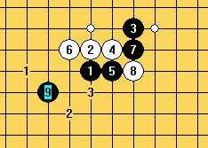
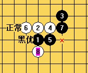
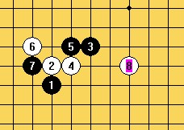
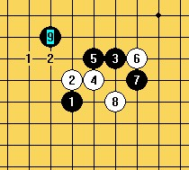
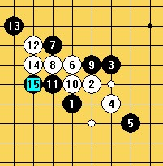

疏星的一些局面
首页
茗弈阁
#1 疏星的一些局面 作者：妙玉偷星 发表时间：2009-8-30 18:55:38
大家慢慢下着拆着玩，，
 ［ 茗弈小刀 于 2009-8-30 20:40:55 时花20金币送鲜花一朵］
［ gerbo 于 2010-4-24 21:48:47 时花20金币送鲜花一朵］
#2 Re:疏星的一些局面 作者：妙玉偷星 发表时间：2009-8-30 22:38:22
下疏星的时候，要做好心里准备，下前十手的时候，一定要做好准备，是下黑白纠缠，还是如何，一定要分析自己的优势局面，因为疏星一般都是一面倒的局面，也就是在一边有优势。下面给大家一个图，会明白的
=======上图对应的爱五子棋谱代码如下，以便你拆解：========
h8h9j10i9i8g9j9j8h10k10f9k9k8j11i10h11f8
======================================================
#3 Re:疏星的一些局面 作者：刀魂 发表时间：2009-8-30 22:43:25

#4 Re:疏星的一些局面 作者：米 发表时间：2009-9-3 8:18:51
=======上图对应的爱五子棋谱代码如下，以便你拆解：========
h8i9j10j8k7h10g11g10i10h9g9f11e12f10f9j9m7k10i8h13g12k9l9k11k12j11
======================================================我来摆摆这个混在疏星题目中的长星15后白如何必胜。白16一子捉双禁：h7和h12两个潜在的双活三点。这两处远隔数子，要想一子双防，只能防在h7横线和h12斜线的交叉点，即m7,也就有了这个看似奇怪的17最强防。但正因为它奇怪，白就容易有后招，即图中白18至白26，一气呵成，形成捉禁和双跳三必得其一的局面。
［ 逆刃 于 2009-9-3 8:52:43 时奖励此帖[金币加 20 威望加1］
［ 茗弈宽容 于 2009-9-3 10:35:04 时花20金币送鲜花一朵］
#5 Re:疏星的一些局面 作者：安娜制作所 发表时间：2009-9-3 9:59:03
我也下了一盘疏星,请大家指点一下,偶下的白棋!
=======上图对应的爱五子棋谱代码如下，以便你拆解：========
h8h7j6i7j7j8h6g6i8k6f9g10f7f8g11k9k8l10m11l9m9l8l7j10i11j11j9i10k10g7g8e11l12m12k12k13f10e9d10d9e10c10g4f5e4d5h4f4i5g3j4h5j3j5k4i4m6
====================================================== ［ 茗弈宽容 于 2009-9-3 10:35:23 时花20金币送鲜花一朵］
#6 Re:疏星的一些局面 作者：妙玉偷星 发表时间：2009-9-3 14:14:26
这个棋，黑棋出现的第一个问题是15手，拓先给白可趁之机动性还有就是在31手，以及以后几手的处理上
［ 飞哥 于 2009-9-3 14:53:45 时花20金币送鲜花一朵］
#7 Re:疏星的一些局面 作者：飞哥 发表时间：2009-9-3 14:53:18
 妙玉偷星真漂亮
妙玉偷星真漂亮
#8 Re:疏星的一些局面 作者：星期十三 发表时间：2010-4-21 21:54:18
LZ的第一张小PP和围棋一间挂的定式一模一样，神奇了
#9 Re:疏星的一些局面 作者：岑小鱼 发表时间：2010-4-21 23:43:23
这种太大了 不好拆
#10 Re:疏星的一些局面 作者：蝶舞红枫 发表时间：2010-4-21 23:58:51
第一个图有什么结论了吗？一直觉得白棋走3比走1好走呢……
#11 Re:疏星的一些局面 作者：秋叶散人 发表时间：2010-4-22 10:29:20
我也来凑个热闹！呵呵。。。
=======上图对应的爱五子棋谱代码如下，以便你拆解：========
h8h9j10i9i8g9j9j8k10l11k7j11k8k11i11k9l10i10g8f9e9m10k12h7l7m6l6k5
======================================================黑25，27局部做棋好手，白28大概应防在M7,实战黑VCT了。你知道黑如何胜吗？请目算。
#12 Re:疏星的一些局面 作者：秋叶散人 发表时间：2010-4-22 10:33:50
=======上图对应的爱五子棋谱代码如下，以便你拆解：========
h8h9j10i9i8g9j9j8k10l11k7j11k8k11i11k9l10i10m10n10g8
======================================================黑19败招！白追下胜，较简单，请目算。
［ 茗弈宽容 于 2010-4-22 12:35:33 时花20金币送鲜花一朵］
#13 Re:疏星的一些局面 作者：侯军学棋 发表时间：2010-5-21 12:55:48
=======上图对应的爱五子棋谱代码如下，以便你拆解：========
h8h9j10i9i8g9j9j8k10l11k7j11k8k11i11k9l10i10m10n10g8l13k12n11m11n9n8n13n12k14
======================================================